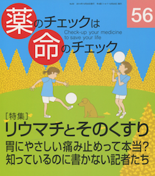

No.56 [特集] リウマチとそのくすり 2014年10月 発行
胃にやさしい痛み止めって本当？
知っているのに書かない記者たち

「夢の新薬」「画期的新薬」「副作用の少ない薬」など、薬剤の効果を宣伝する情報には事欠きません。
一方、本誌の特色は、薬剤の利益だけでなく害もきちんと評価することにあります。購読料だけで成り立ち、どこからも資金援助のない
独立・中立の医薬品情報誌という立場で独自に薬剤を評価しています。
例えば、今、米国で裁判になり製薬会社敗訴判決が出ている（2014年9月現在）糖尿病治療薬薬剤アクトス（武田薬品）は、
本誌創刊号（2000年1月）で「危ない」としました。その後も、糖尿病や高血圧、コレステロール低下剤、
ベンゾジアゼピン系の薬剤（抗不安剤、睡眠薬など）は、特集やトピックで繰り返し取り上げてきました。不要な薬剤を処方され、
ますます悪化する、害が出るなどの人が多いからです。
そして今回の特集は、読者から要望の多かったリウマチとそのくすりです。
もくじ
Main Feature 特集 リウマチとそのくすり
特集を読む、その前に・・・ 編集部
患者と医師の話し合いがより良い医療を生む 本沢龍生
ーリウマチクリニックからー
宵越しの傷は持つな！ 浜 六郎
ーリウマチと治療薬剤を徹底解剖するー
万病の元は炎症、炎症の元はストレス
《宵越しの傷は持つな》療法ーその根拠
リウマチ用薬剤の評価ーアセトアミノフェンとNSAIDs
リウマチ用薬剤の評価ー免疫抑制剤
薬剤リスト
薬物治療が必要な場合
限定使用の薬剤
危険・無効・不要な薬剤
セレコックスが「胃に優しい痛み止め」は本当？ 安田能暢
Overseas 海外情報
サルからバナナを取り上げる 坂口啓子
Series 連載
■ 医師国家試験に挑戦しよう！（22） 木元康介
■ コーヒー無礼区 方言と専門用語 坂口啓子
■ リレーエッセイ 臨床研究の不正事件に思うこと 浅野泰世
■ みんなのやさしい生命倫理（56） 生老病死(26) 谷田憲俊
■ 新・市民の視点 知っているのに書かない記者たち 隈本邦彦
■ 質問箱
①がん研データは信用できる？
②55号22頁の図6について
■ 医師国家試験の解答と解説
Others
お知らせ：2015年1月 本誌リニューアル！
読者の声
書評
バックナンバー一覧 ／ 書籍申込用紙
編集後記/奥付